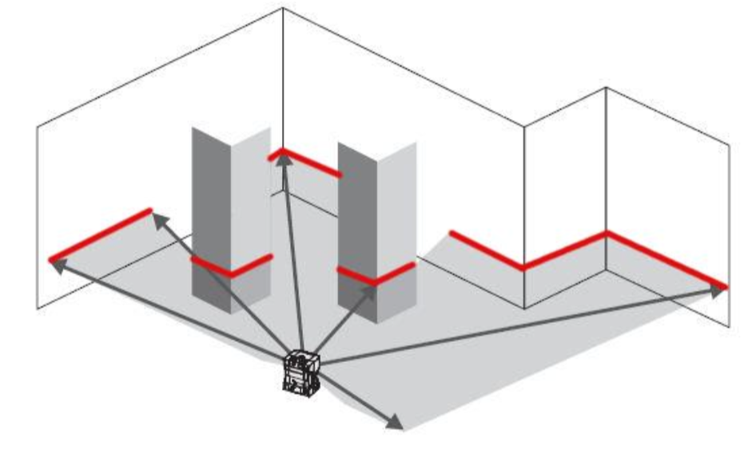

Deformation of the expected pattern allows computation of the depth
Beyond the visible spectrum: RGBD cameras
Drawbacks:
Does not work well outdoors, sunlight saturates its measurements
Maximum range is [0.5, 8] meters
Advantages:
Real-time depth estimation at 30Hz
Cheap
Beyond the visible spectrum: RGBD cameras
Enabled a wave of research, applications, and video games, based on real-time skeleton tracking
Beyond the visible spectrum: RGBD cameras
Despite their drawbacks RGBD sensors have been extensively used in robotics.
3D LIDAR (Light detection and ranging)
Produces a pointcloud of 3D points and intensities
(x,y,z) in the laser’s frame of reference
Intensity is related to the material of the object that reflects the light
Works based on time-of-flight for each beam to return back to the scanner
Not very robust to adverse weather conditions: rain, snow, smoke, fog etc.
Used in most self-driving cars today for obstacle detection. Range < 100m.
Usually around 1million points in a single pointcloud
2D LIDAR (Light detection and ranging)
Produces a scan of 2D points and intensities
(x,y) in the laser’s frame of reference
Intensity is related to the material of the object that reflects the light
Certain surfaces are problematic for LIDAR: e.g. glass
Lots of moving parts: motors quickly rotate the laser beam and once complete (angle bound reached) a scan is returned. I.e. points are not strictly speaking time-synchronized, even though we usually treat them as such.

Usually around 1024 points in a single scan.
Inertial Sensors
Gyroscopes, Accelerometers, Magnetometers
Inertial Measurement Unit (IMU)
Perhaps the most important sensor for 3D navigation, along with the GPS
Without IMUs, plane autopilots would be much harder, if not impossible, to build
We integrate it to get 3D orientation (Euler angles, quaternions rotation matrices), but there is drift due to noise and bias
Accelerometers
Measure linear acceleration relative to freefall (measured in g)
A free-falling accelerometer in a vacuum would measure zero g
An accelerometer resting on the surface of the earth would measure 1g
Also affected by bias and noise.
Double integration to get position is very noisy. Errors grow quadratically with time.
Magnetometers
Drawbacks:
Needs careful calibration
Needs to be placed away from moving metal parts, motors
Advantages:
Can be used as a compass for absolute heading
Inertial Measurement Unit
Combines measurements from accelerometer, gyroscope, and magnetometer to output an estimate of orientation with reduced drift.
Does not typically provide a position estimate, due to double integration.
Runs at 100-1000Hz
Expect yaw drift of 5-10 deg/hour on most modern low-end IMUs
Global Positioning System: Satellites
Each GPS satellite periodically transmits:
[Coarse/Acquisition code] A 1023-bit pseudorandom binary sequence (PRN code), which repeats every 1 ms, unique for each satellite (no correlation with other satellites).
[Navigation frame] A 1500-bit packet that contains
GPS date, time, satellite health
Detailed orbital data for the satellite, accurate for the next ~4hrs
PRN codes and status of all satellites in the network
Takes 12.5mins to transmit
[Precision code] A 6.2-terabit code for military use.
Carrier frequencies are 1575.42 MHz (L1) and 1227.60 MHz (L2)
Global Positioning System: Receivers
Each (civilian) GPS receiver:
Knows the PRN codes for each satellite in advance
Correlates received PRN signal with database PRN signal → time shift → noisy distance to satellite
If 4 or more satellite PRN codes are received, it does trilateration to compute latitude and longitude
Global Positioning System: Receivers and Dilution of Precision
Hall Effect Sensor
Varies its voltage in response to a magnetic field
Used as a proximity switch, to measure a full rotation of a wheel for example
Used to measure rate of rotation of wheels
Rotary Encoder
Contains an analog to digital converter for encoding the angle of a shaft/motor/axle
Usually outputs the discretized absolute angle of the shaft/motor/axle
Useful in order to know where different shafts are relative to each to each other.
Example: flippers on the Aqua robot
Actuators
DC (direct current) motor
Servo motor
Stepper motor
They turn continuously at high RPM (revolutions per minute) when voltage is applied. Used in quadrotors and planes, model cars etc.
Usually includes: DC motor, gears, control circuit, position feedback
Precise control without free rotation (e.g. robot arms, boat rudders) Limited turning range: 180 degrees
Positioning feedback and no positioning errors.
Rotates by a predefined step angle.
Requires external control circuit.
Precise control without free rotation.
Constant holding torque without powering the motor (good for robot arms or weight-carrying systems).
Pulse Width Modulation
Used for creating analog/continuous behavior when voltage applied is discrete.
Main idea: turn on and off the motor fast enough so average voltage is the desired target.
Used in dimming LEDs, controlling the speed of DC motors, controlling the position of servo motors.